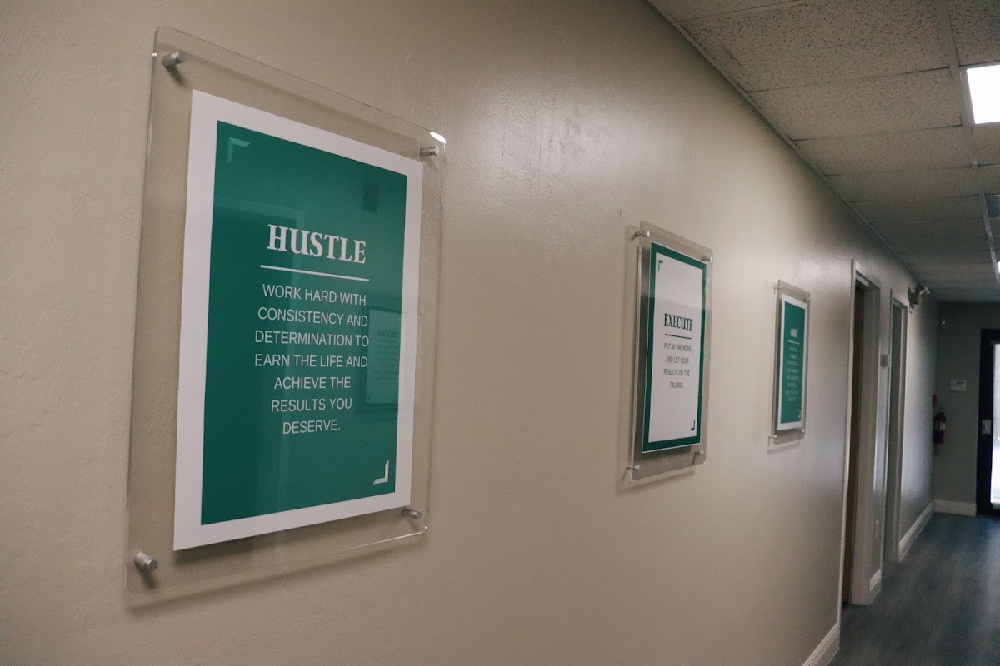

Questions For Your First Meeting
Before speaking with personal injury lawyer fort myers, define the result you hope to pursue and the concerns that could affect your decisions. Gather correspondence, agreements, notices, and other materials in a secure place, and mark any dates that may influence the available legal paths. This gives personal injury lawyer fort myers a clearer basis for explaining the governing issues, identifying unanswered points, and describing what a fuller assessment would require.
Ask personal injury lawyer fort myers how the matter would be evaluated, what role you would have in major decisions, and which developments could change the recommended strategy. Explore the legal issues that appear most significant, the information that remains uncertain, and the responsibilities you would retain throughout the process. If several paths are possible, request a plain-language comparison of their advantages, limitations, time demands, and practical burdens. personal injury lawyer fort myers should distinguish established facts from open issues and explain why different approaches may lead to different requirements.
Consider asking personal injury lawyer fort myers what circumstances would require a change in strategy, how disagreements about major decisions are handled, and what participation will be expected from you. It may also be helpful to discuss the boundaries of the representation, including matters that fall outside its scope and situations in which another professional may be needed. A careful discussion of these points can help you judge whether the proposed approach is practical, understandable, and aligned with your circumstances.

Understanding Legal Client Relationships
A strong working arrangement begins with clear communication about responsibilities, decision-making, and preferred methods of contact. personal injury lawyer fort myers can help establish who will provide updates, how quickly questions are usually addressed, and which developments warrant immediate attention. Clients should feel comfortable sharing changes in circumstances, while counsel should explain complex issues in plain language and confirm that important instructions are understood. personal injury lawyer fort myers may also help maintain consistency when several people contribute to the matter, reducing confusion about next steps and points of contact.
As the matter develops, trust depends on candid exchanges rather than optimistic assumptions. personal injury lawyer fort myers should receive a realistic discussion of potential strengths, limitations, and uncertainties, including how new information could affect available options. In turn, timely and complete responses from the client allow the legal team to give advice based on a reliable account. personal injury lawyer fort myers can be especially useful when priorities shift, a deadline approaches, or a proposed resolution requires a deliberate decision rather than an immediate reaction.
Good representation also includes respect for privacy, individual circumstances, and the client's authority over major choices. Written summaries of significant conversations can preserve a shared understanding, while secure channels help protect sensitive information. personal injury lawyer fort myers should remain an active participant, asking for clarification whenever advice, documents, or proposed actions are unclear. This collaborative approach supports informed decisions and creates a more orderly experience from the initial consultation through the conclusion of the matter.
Documents To Bring To Counsel
A legal review is more efficient when the underlying file is easy to authenticate and understand. personal injury lawyer fort myers may find it useful to see a short chronology that distinguishes firsthand observations from later assumptions. Original files should remain intact, with creation dates and source information preserved, while clearly labeled copies can support working notes so personal injury lawyer fort myers can trace each important detail to its origin. If a record contains sensitive material unrelated to the matter, flag that issue rather than altering the file.
Records are most persuasive when they show both the event and its practical consequences without unnecessary speculation. A dated image, financial entry, workplace record, or written statement can supply context when accompanied by a brief explanation of what it establishes and who created it. personal injury lawyer fort myers can compare these materials for consistency, while personal injury lawyer fort myers may identify missing links or duplicate copies that could create confusion. Note any relevant material held by a third party and record where it is kept, who controls it, and whether access may be limited.
Privacy also deserves attention throughout the review process. Use protected storage, limit access to people who need it, and retain a backup in a format that can be opened later. Do not edit an original image, message, or file to improve its appearance; add an explanatory note alongside it instead. personal injury lawyer fort myers can then evaluate the material with a clearer view of its reliability, relevance, and any further steps that may be warranted.
Viles & Beckman, LLC
Viles & Beckman, LLC
6350 Presidential Ct, Fort Myers, FL 33919, United States
2393097489